Candidate List 20261114Last night — ZTF: 0 passed basic cuts (0 young) · LSST: 2,540 passed basic cuts (296 young)Previous Day Next Day
Section 1: New Sources (age<1d) Section 2: Old (1-5d) sources observed last night Section 3: Already classified as a supernova on TNSplaceholder
Section 2: Older Sources Observed Last Night (5)
1. [LSST] 171141216952385542 (Afterglow?) [Back to Top] [Fritz Alert] [Fritz Source] [Lasair]RA, Dec: 53.38305, -27.9029 3h33m31.93s, -27d-54m-10.45sGalactic (l, b): 223.7934, -54.21853 ext(g-r) = 0.007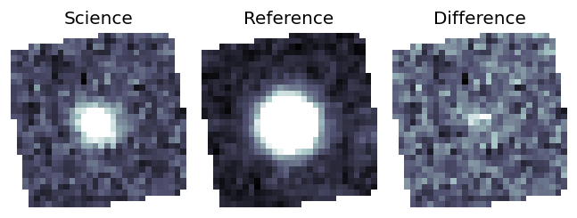
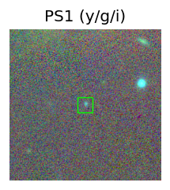
TESS: Sectors [ 4 31 105 106 107 108]
NED host (10 arcsec):Found WISEA J033331.89-275409.9 (G, 0.7″); NED spec-z: z=2.5530 [zflag S1L]; peak abs mag = -23.96
NED photo-z only: [CVU2010] 25275 (G, 5.5″) z=0.8155 [zflag PUN] — not used for peak abs mag
PS1: 0 sources in 3 arcsec
LegacySurvey: 0 sources in 3 arcsec
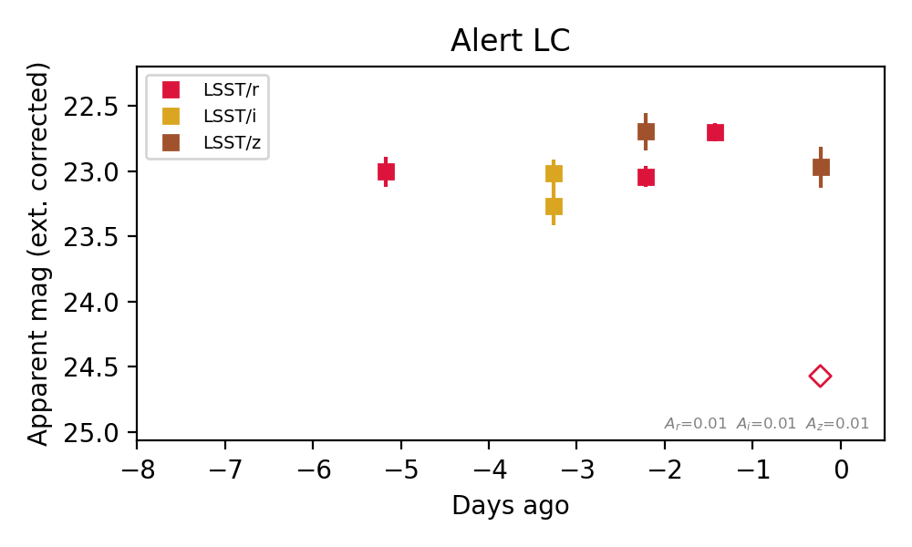
Rise Rate:
r: 0.07 mag/day
Fade Rate:
r: 1.55 mag/day
2. [LSST] 171180820453130351 (FBOT?) [Back to Top] [Fritz Alert] [Fritz Source] [Lasair]RA, Dec: 57.70309, -50.03237 3h50m48.74s, -50d-1m-56.53sGalactic (l, b): 259.25649, -49.00927 ext(g-r) = 0.012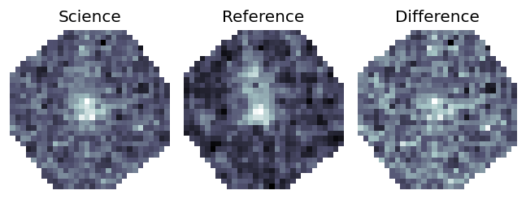

TESS: Sectors [ 3 4 30 31 97]
PS1: 0 sources in 3 arcsec
LegacySurvey: 1 sources in 3 arcsec Closest: d = 0.17 arcsec, 9.8 deg (east of north) photoz=0.54 (68% bounds 0.44, 0.66), type=DEV peak abs mag (ext. corrected) = -19.63 (68% bounds -19.11, -20.15)
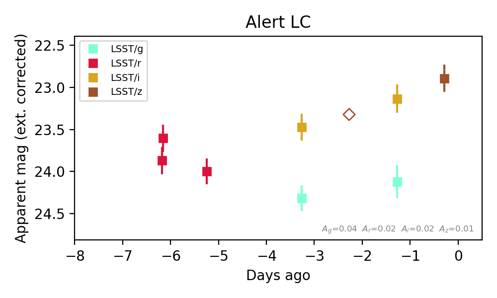
Extinction-corrected gi color:
From alerts: 0.98 +/- 0.26 mag
Consistent with synchrotron, g-r>0!
Rise Rate:
z: 0.22 mag/day
Fade Rate:
3. [LSST] 171185213438165000 (Afterglow?) [Back to Top] [Fritz Alert] [Fritz Source] [Lasair]RA, Dec: 51.79288, -26.70332 3h27m10.29s, -26d-42m-11.96sGalactic (l, b): 221.34854, -55.42357 ext(g-r) = 0.012


TESS: Sectors [ 4 31 105 106 107 108]
PS1: 0 sources in 3 arcsec
LegacySurvey: 1 sources in 3 arcsec Closest: d = 9.18 arcsec, 212.1 deg (east of north) photoz=1.07 (68% bounds 0.6, 1.75), type=REX peak abs mag (ext. corrected) = -21.45 (68% bounds -19.89, -22.76)

Extinction-corrected ri color:
From alerts: 0.02 +/- 0.14 mag
Consistent with synchrotron, g-r>0!
Rise Rate:
r: 6.02 mag/day
i: 0.37 mag/day
Fade Rate:
r: 0.34 mag/day
i: 0.28 mag/day
4. [LSST] 314011740712992875 (Afterglow?) [Back to Top] [Fritz Alert] [Fritz Source] [Lasair]RA, Dec: 52.91358, -27.63121 3h31m39.26s, -27d-37m-52.35sGalactic (l, b): 223.22497, -54.58855 ext(g-r) = 0.009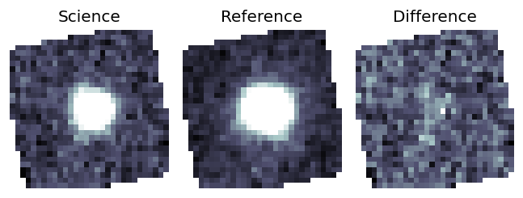
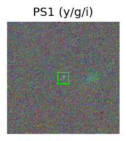
Milliquas v8 (2 arcsec):Found None (description), name = None, QSO probability: None %
NED QSO match (10 arcsec): WISEA J033139.24-273751.7 (QSO, 0.4″, z=1.4280)
TESS: Sectors [ 4 31 105 106 107 108]
NED photo-z only: S-CANDELS J033139.28-273755.2 (G, 2.8″) z=0.1360 [zflag PUN] — not used for peak abs mag
PS1: 0 sources in 3 arcsec
LegacySurvey: 1 sources in 3 arcsec Closest: d = 0.04 arcsec, 233.0 deg (east of north) photoz=1.4 (68% bounds 1.28, 1.5), type=PSF peak abs mag (ext. corrected) = -21.57 (68% bounds -21.31, -21.75)
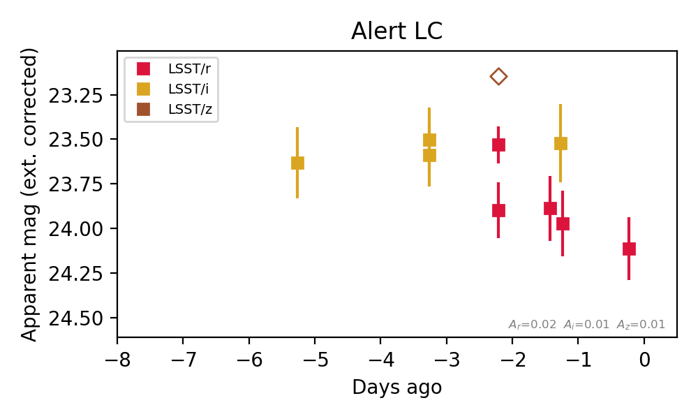
Extinction-corrected ri color:
From alerts: 0.41 +/- 0.26 mag
Consistent with synchrotron, g-r>0!
Rise Rate:
Fade Rate:
r: 0.25 mag/day
5. [LSST] 171194008855904310 (FBOT?) (TNS: AT 2026ajpf) [Back to Top] [Fritz Alert] [Fritz Source] [Lasair]RA, Dec: 60.67123, -47.92166 4h 2m41.09s, -47d-55m-17.99sGalactic (l, b): 255.45484, -47.64484 ext(g-r) = 0.013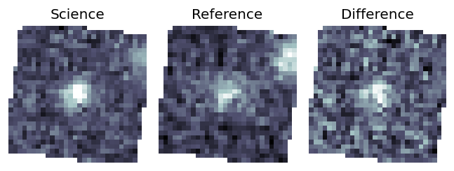

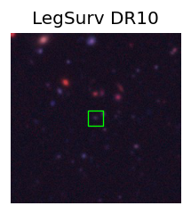
TESS: Sectors [ 3 5 30 97]
PS1: 0 sources in 3 arcsec
LegacySurvey: 1 sources in 3 arcsec Closest: d = 0.22 arcsec, 99.4 deg (east of north) photoz=0.52 (68% bounds 0.4, 0.64), type=EXP peak abs mag (ext. corrected) = -20.46 (68% bounds -19.8, -20.99)
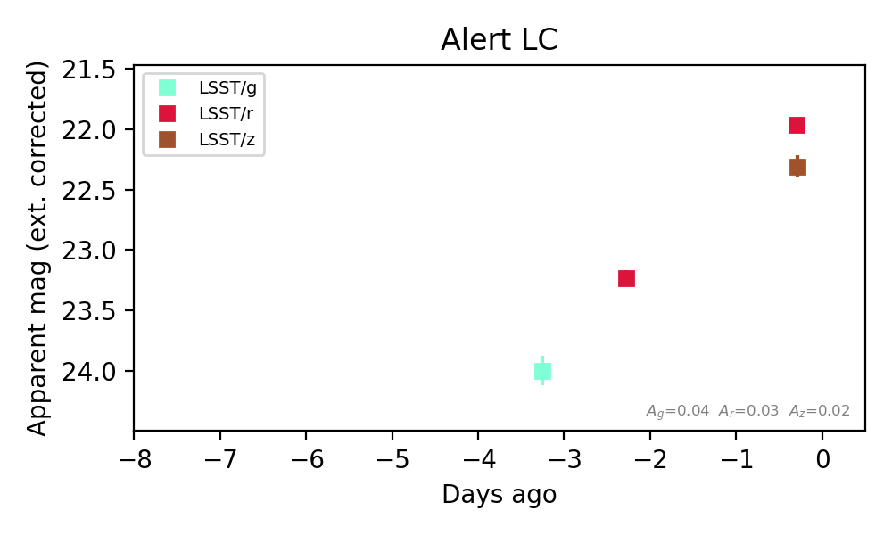
Rise Rate:
r: 0.64 mag/day
Fade Rate:
Section 3: Already classified as a supernova on TNS (0)